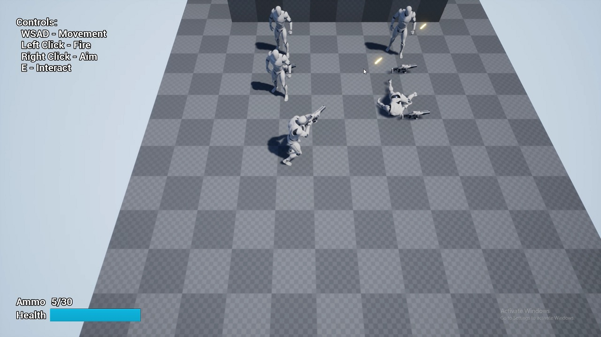

//
Portfolio
Welcome to the showcase of my past work! Here, you can find information about many of my projects that I have created in the past. Please note that this site contains only work that I have created since 2013, as unfortunately I do not have many of my older projects archived.
Quick tip: You can click on most thumbnails below to view short videos or additional details!
//
Current Work
Employment
- Currently employed as Senior QA Technician at a game testing company Testronic, where I have the pleasure of working on many exciting projects developed by well known studios from all around the world.
- Website: Testronic
Game Programming
- Currently working on a 2D game engine written in C++. Utilizes OpenGL library for realtime graphics and Lua as a scripting language.
- Repository: GitHub
//
Gameplay Demos
Shooting Character in Unreal Engine 4

- Shooting character demo reimplemented in Unity Engine 4. Features top-down character locomotion with animation and some gameplay elements implemented such as different moving/aiming stances, shooting, items and health system. All character logic was written in C++, with few systems built using Blueprints.
- Repository: GitHub
Shooting Character in Unity 5

- Shooting character demo with some gameplay mechanics implemented such as aiming with a weapon and sprinting. Characters are heavily built with animation blend states, motion root and inverse kinematics. Scripts are written in C#.
- Repository: GitHub
Character Locomotion in Unity 5

- Character locomotion animation demo. Utilizes PID controllers to smoothly control character's rotation using physical forces. Scripts for this demo were written in C#.
- Repository: GitHub
Controller Controller in Unity 5

- First and third person character controller demo. Uses a physically controlled rigidbody that properly reacts to the environment. Character correctly moves and jumps on difficult terrain, bouncing and sliding as expected. Includes a simple AI for following and shooting at nearby targets. Scripts for this demo were written in C#.
- Repository: GitHub
//
Game Engine
- Side scrolling shooter game prototype that showcases a custom game engine written from scratch in C++ and utilizing OpenGL API for graphics.
-
Notable features:
- Font loading and rendering using signed distance fields.
- Cache system for storing expensive calculations between application's executions.
- Very efficient 2D sprite rendering achieved with batching and instancing.
- Scripting Lua engine where the entire game logic resides.
- Entity/Component system for all game objects.
- Elegant logging system using stream operators.
- Quake like console with input and variables.
- Repository: GitHub
//
Game Modding
Mod for XCOM 2: War of the Chosen

- Soundtract Restoration mod for XCOM 2's latest expansion War of the Chosen running on Unreal Engine 3. Restores and resuses unused or otherwise removed soundtracks with the help of UnrealScript.
- Website: Steam Workshop
- Repository: GitHub
Mods for Civilization 5: Brave New World


- Collection of two mods called Quick Turns and Quick Diplomacy that greatly improve the speed of AI turn processing in Civilization V game by Fireaxis. Mods were created by writing Lua addons and modifying the game's source code that is written in C++. Both of these modifications have been downloaded by almost two hundred thousand of players in total.
- Website: Steam Workshop
- Repository: GitHub
//
Terrain Rendering
- Custom terrain generation and rendering engine written from scratch in C++ that utilizes Direct3D 11 API. Features random landscapes created with a single press of a button. Terrain's mesh is created from a heightmap generated using diamond-square algorithm. Detail textures are created by running a shader that turns its heightmap into a normal texture.

- Main feature implements geomipmapping that splits the entire terrain into small patches, each with a different resolution based on the distance from the view. Terrain patches are later carefully connected to each other in order to remove seams. This feature along with the frustum culling improves performance from 10 FPS to 150 FPS on 1024x1024 heightmap terrain. Rendering the entire terrain and all of its patches requires only a single draw call.

- Custom framework also features a day and night cycle with a sky dome rendered using an atmospheric scattering shader.
//
Environment Rendering

- Rendering framework demo written in C++ and utilizing Direct3D 11 API. Showcases Atrium Sponza Palace model improved and published by Crytek that was originally created by Frank Meinl.

- Scene features a point light casting shadows that heavily utilizes hardware instancing along with its cube shadow mapping for major performance improvements. Imported and rendered model contains multiple different textures and types of materials. Normal and specular maps had to be separately created for each imported diffuse texture. Shaders written in HLSL render these materials with correct normal and specular lighting.
//
Deferred Rendering

- Implementation of a deferred renderering technique that is now utilized by almost every game to some extent. Features a renderer written in C++ and utilizing Directx 3D API that handles a virtually unlimited number of light sources that otherwise cannot be drawn easily using traditional forward rendering techniques. Showcases a scene with Stanford Bunny and advanced lighting.

- Scene is first rendered to many different buffers containing information such as diffuse, normal, specular, emissive and motion values. Second pass involves combining these buffers and drawing blended lights. Scissor tests are used to improve the performance by only drawing into the parts of the frame buffer that are affected by a rendered light volume.
//
HDR Rendering

- Rendering framework demo written in C++ and utilizing Direct3D 11 API. Presents High Dynamic Range (HDR) technique that renders a scene into a high precision frame buffer that is later mapped into a color range that can be displayed by the monitor. Allows special effects such as accurate bloom to be applied.

- Scene presents a cube mapped sphere with fresnel reflections. Demo utilizes a histogram that mimics the eye's adaptation to the brightness of the environment. Demos were based on NVIDIA SDK samples.
//
Text Rendering

- Custom rendering framework for loading fonts and drawing text strings, written in C++ and utilizing Direct3D 11 API. Font glyphs are first rendered to a bitmap and then drawn as sprites. Dedicated cache stores previously rendered glyphs for later use. Quering text metrics allows the text to be transformed or wrapped. More efficient and capable implementation that uses signed distance fields can be found on my GitHub page.
//
Steering Behaviors


- Simulations written in C++ for the movement of AI boids in space utilizing steering behaviors. Different behaviors include: seek, arrival, follow, flee, wander and obstacle avoidance. Implemention based on the white paper by Craig W. Reynolds.
//
Music Player

- Music player written with Web technologies such as HTML/CSS/JavaScript that can be deployed as a native application for desktop platforms thanks to Node-Webkit.
- Repository: GitHub
//
Prototypes
2D Game Prototype

- Early prototype of game running on a custom engine that features sprite animations and depth sorted 2D sprite rendering. Written in C++ and utilizing OpenGL API.
- Repository: GitHub
Mobile Game

- Simple tap styled mobile game written in Java. Project created to explore and dive into the development for mobile platforms.
- Repository: GitHub